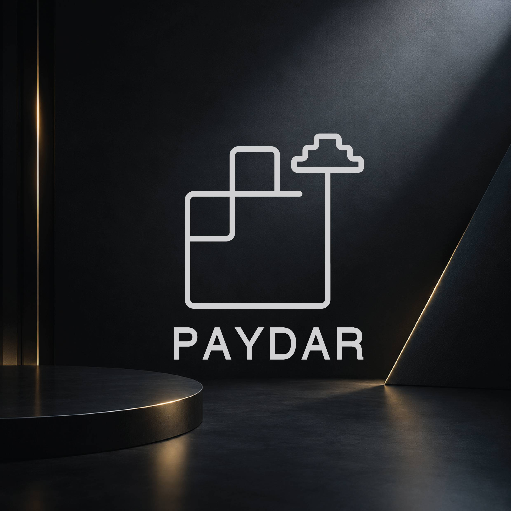
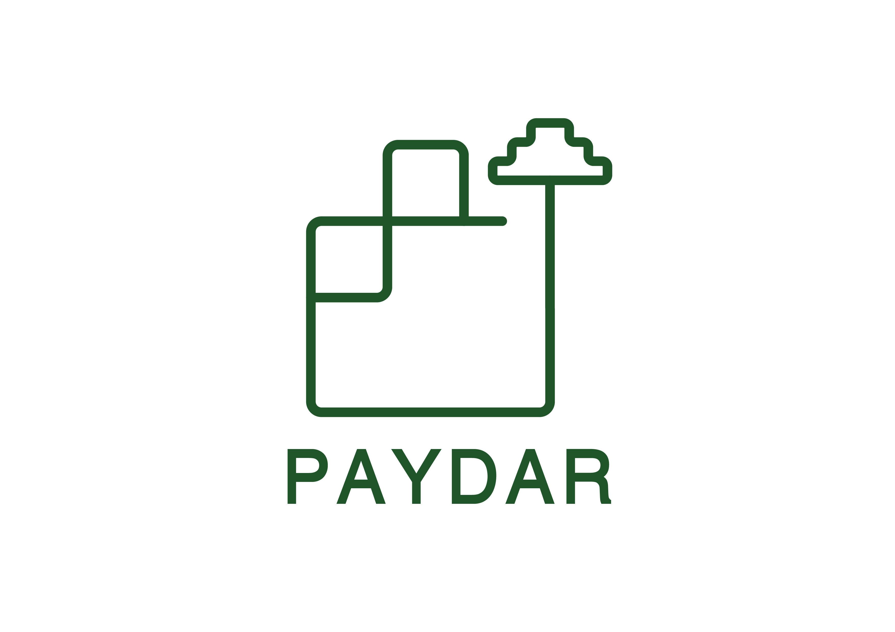
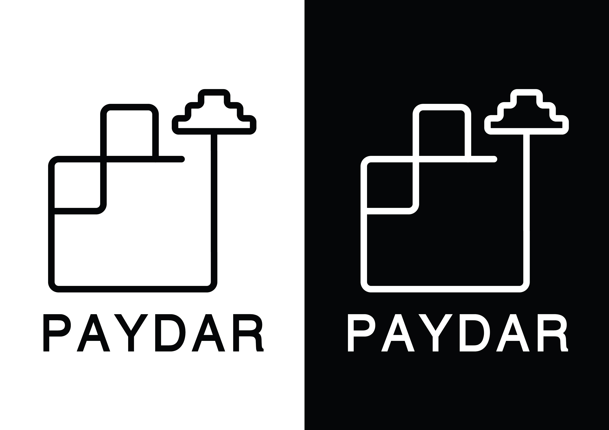
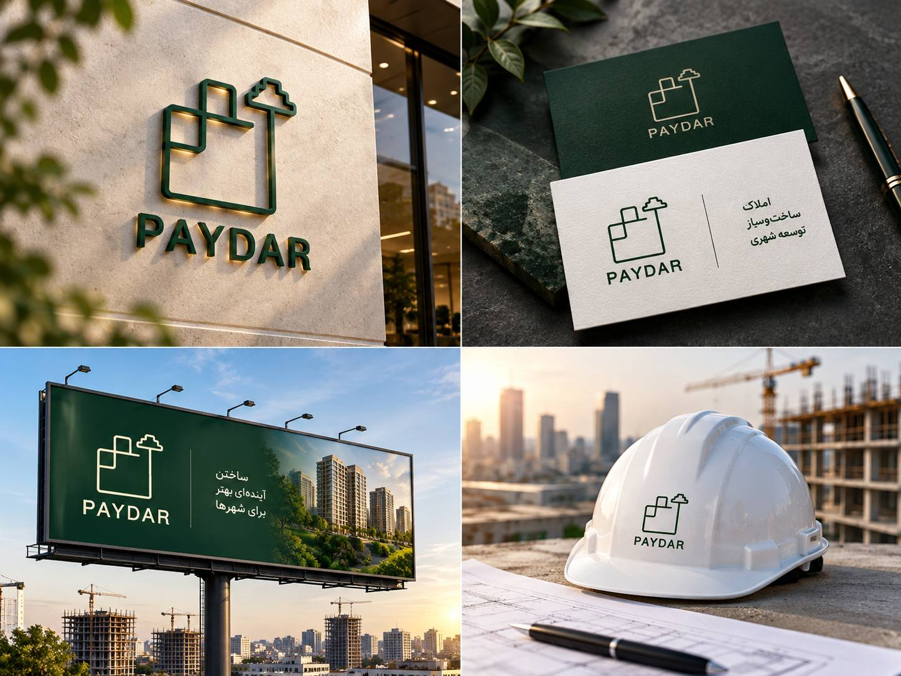

PAYDAR
ساده · مدرن · هندسی

نمای کلی
پروژه
پایدار یک پروژه طراحی مفهومی لوگو است که برای حوزهی املاک و ساختوساز توسعه داده شده. این هویت بصری، ثبات، ساختار و تداوم را از طریق رویکردی هندسی و شفاف بازتاب میدهد و شخصیت معماری را با حسی از رشد طبیعی درهم میآمیزد.
ساختاری
که پایدار میماند.
مفهوم این پروژه، فرمهای هندسی الهامگرفته از معماری، ساختوساز و رشد طبیعی را در کنار هم قرار میدهد. رابطهی میان ساختار معماری و درخت، بیانگر ثبات، رشد و تداوم است و هویتی بصری با شخصیتی روشن و استوار میسازد.
نشان نهایی

یک نشان.
زمینههای متفاوت.

در دل کاربرد
مجموعهای از نمونهکاربردها که نشان میدهد هویت پایدار چگونه میتواند به کاربردهای عملی برند تبدیل شود، بیآنکه شخصیت هندسی و روشن خود را از دست بدهد.
